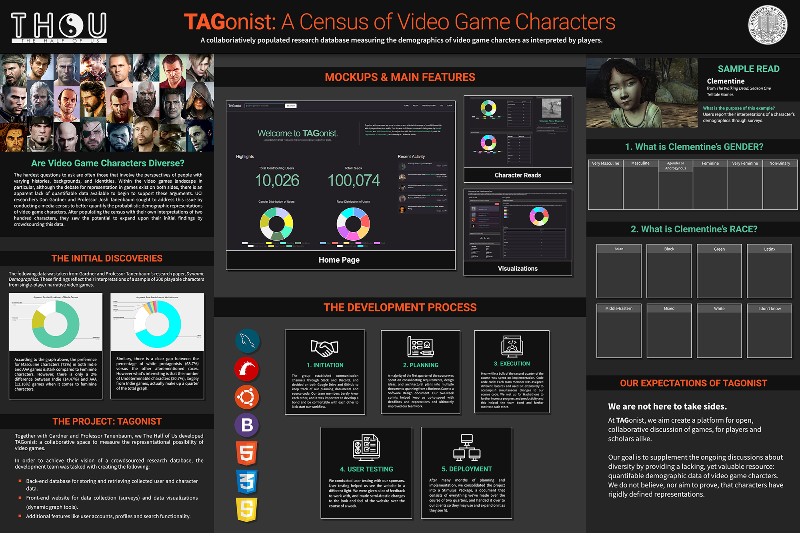

TAGONIST
Lead UI/UX Designer.
Completed for Senior Design Project Course.
Jan-June 2018.
Initial Prototypes / Concepts
These images of survey page showcase the evolution toward the final website design.
Both images were created using Photoshop.
Final Design
These screenshots show pages of the most recent website design at the conclusion of the course.
The front-end was built using Bootstrap 3.
Home Page
User Profile

Project Posters
I was also responsible for creating project posters. The final poster was put on display during a student project showcase at UC Irvine.
Initial Poster
Final Poster
